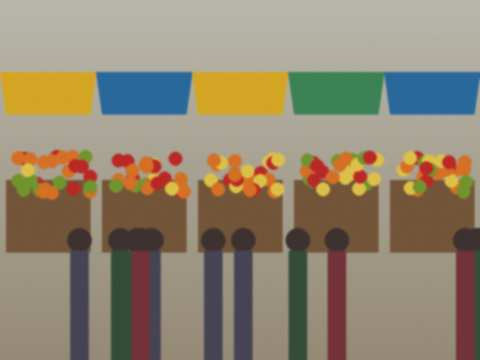
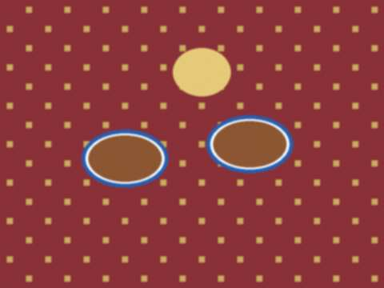
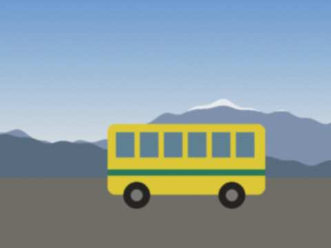

9 December 2008 The big boxes go by lorry. The driver is Almaz, a Kyrgyz from Tokmok, three years already. He has a Kyrgyz plate and a Kyrgyz stamp, so the lorry crosses where the Talas ones cannot. He takes 80 dollars a ton and one tea. Last Tuesday his lorry waited 19 hours at the Khorgos side and came to Talas with all my boxes and a puppy, I do not know where the puppy came from.
At the Talas North Terminal the ISEZ customs read my invoice, look at me, write a number on the back. The number depends on who is on the shift. Some officers are kind, some are hungry, some are new. I know them by name and what they like (a sack of walnuts at New Year). 14 November 2008 -12 in the morning. The market opens at ten and I am there at nine looking at the shutters, eating a hot nan from the Uyghur uncle with the cart. He gives me one extra every time I say "rakhmat" in his language. I know eleven words. Nine are food.
What I look for: the covers with the new shapes (this year everyone wants the slide phones), chargers from the same factory as last time (I know the girl who sells them, she knows my mother's name now), warm hats. I buy for 3 days, I pack for 1, I sleep for 2 hours.
 Er Dao Qiao market, early. Prices written on a cardboard in four languages. Hot tea at the Uyghur uncle's cart. 2 yuan. It is a good price.25 October 2008 For the ones who ask "how far is it": from the stall to the stall, about 36 hours if God is kind.
- Talas to the North Terminal and across into Kazakhstan: 1 hour, then 2 hours for the paper.
- Bus to Almaty: 9 hours. 22 dollars.
- One night in Almaty at the cousin of my friend. She snores. 5 dollars for the tea and the floor.
- Almaty to Urumqi: the big night bus, 55 dollars one way, 24 hours if the Khorgos border is nice, 30 if not.
The papers are another story: my ISEZ papers are good for crossing the street, so I go with the Kyrgyz paper from the Almaty office, 60 dollars a year. Everybody does. Nobody says it.
 The night bus to Urumqi, 6 p.m. Everyone has the same blue bag.2 October 2008 People think a trader comes back with one big bag. Here is a normal return, October 2008:
- Phone covers, 300 pieces (3 yuan each there; 9 or 10 som here, the one with a horse 12)
- Chargers for Nokia and Samsung, 60 pieces (12 yuan; 25 som)
- Battery packs, 40 (good ones, I test each one with my tongue, it is a joke, I use the phone)
- Socks, 12 dozen; belts, 50; hats, 30 (winter is coming)
- Keyrings with a bear. Do not ask. They sell.
All together 110 kilos. The bus lets me take 50 without paper. The rest goes with the lorry, see the next post. 18 September 2008 Ruslan from the phone shop says: Kunduz-apa, you tell the same story to every customer, put it on the internet and save your voice. So. Here is the internet.
I go to Urumqi to buy what Talas wants. It is a long way and nobody believes it is a hard job because I come back with a smile and a good price. The smile is for the customer. The knees are for me.
One post when I come back from every trip. Prices, the border, who was rude. Please read, do not copy my suppliers. |